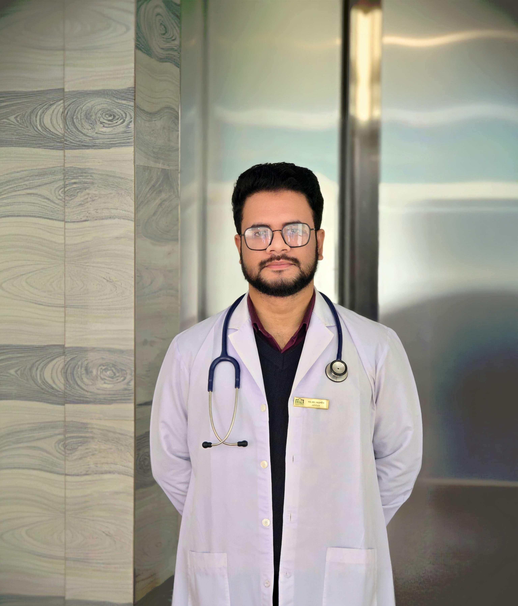

সাধারণ মেডিসিন
সাধারণ স্বাস্থ্য সমস্যা ও মেডিসিন বিষয়ে পরামর্শ।
রোগীর প্রয়োজনকে গুরুত্ব দিয়ে পেশাদার চিকিৎসা পরামর্শ ও যত্ন।
এম.বি.বি.এস (চট্টগ্রাম মেডিকেল বিশ্ববিদ্যালয়) · পিজিটি (অর্থোপেডিক সার্জারি)

ডা. আবু জাফর মোং নেছারুদ্দিন চট্টগ্রাম মেডিকেল বিশ্ববিদ্যালয় থেকে এম.বি.বি.এস সম্পন্ন করেছেন এবং অর্থোপেডিক সার্জারিতে পিজিটি প্রশিক্ষণ নিয়েছেন। তিনি একজন জেনারেল ফিজিশিয়ান। তাঁর পরামর্শের ক্ষেত্রের মধ্যে রয়েছে সাধারণ মেডিসিন, দুর্ঘটনা ও আঘাতজনিত সমস্যা, হাড়-জয়েন্ট ও পেশিসংক্রান্ত উপসর্গ, কোমর ও হাঁটুর ব্যথা, জয়েন্ট ও বাতজনিত ব্যথা, শিশুদের সাধারণ স্বাস্থ্য সমস্যা এবং শ্বাসতন্ত্রের উপসর্গ। তিনি রোগীর কথা মনোযোগ দিয়ে শোনেন এবং স্পষ্ট, প্রাসঙ্গিক পরামর্শ দেন।
এম.বি.বি.এসচট্টগ্রাম মেডিকেল বিশ্ববিদ্যালয়
পিজিটিঅর্থোপেডিক সার্জারি
বিএমডিসি A-144229নিবন্ধন নম্বর
সাধারণ স্বাস্থ্য সমস্যা ও মেডিসিন বিষয়ে পরামর্শ।
দুর্ঘটনা ও আঘাতের পর চিকিৎসা-পরামর্শ।
হাড়, জয়েন্ট ও চলাচল-সংক্রান্ত উপসর্গে পরামর্শ।
কোমর ব্যথা ও অস্বস্তি নিয়ে পরামর্শ।
বাতজনিত ও দীর্ঘস্থায়ী জয়েন্টের ব্যথা মূল্যায়ন।
হাঁটুর ব্যথা ও চলাচলে অস্বস্তি নিয়ে পরামর্শ।
জয়েন্টের ব্যথা ও সংশ্লিষ্ট উপসর্গে পরামর্শ।
শিশুদের সাধারণ স্বাস্থ্য সমস্যায় পরামর্শ।
শ্বাসকষ্ট ও শ্বাসতন্ত্রের উপসর্গ নিয়ে পরামর্শ।
গুরুতর বা জীবন-ঝুঁকিপূর্ণ জরুরি অবস্থায় নিকটস্থ উপযুক্ত হাসপাতালের জরুরি বিভাগে অবিলম্বে যান।
ডা. আবু জাফর মোং নেছারুদ্দিনের চেম্বার ইউনিটি মেডিক্যাল সেন্টার, কাদৈর।
অ্যাপয়েন্টমেন্ট বা চেম্বারের তথ্য জানতে ফোন করুন বা বার্তা পাঠান।
প্রতিদিন সকাল ১০টা থেকে সন্ধ্যা ৬টা পর্যন্ত